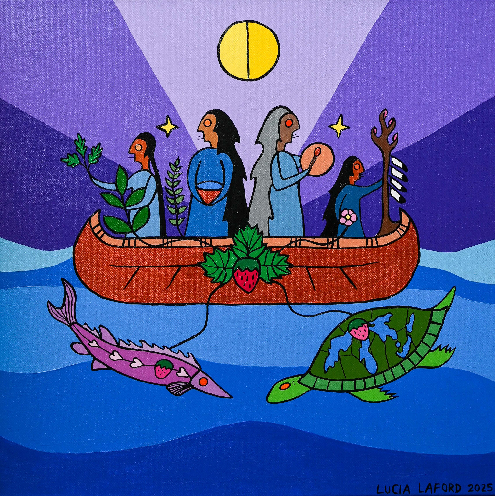

Click any symbol to learn more

Underwater life – Curiosity is represented by the large underwater creatures, the sturgeon and the turtle. We aim to approach our work with open minds and curiosity.
Strawberry (Ode’iminin) - Strawberries are the only fruit that carry their seeds on the outside, to teach us to be vulnerable. Their leaves grow in clusters of three. They spread from their roots to keep each other company. Just like strawberries, humans grow better together. This represents the importance of our abilities to be vulnerable and our willingness to grow in this work together.
Sun – The sun represents the cycle of life and the interconnectedness of all things. For Indigenous peoples, water quantity and quality are not only ecological and health issues but also parts of a much broader holistic perspective which recognizes that all aspects of Creation are interrelated (Cave & McKay, 2016; McGregor, 2012).
Four women - The four women represent the four directions and the different generations working together. Indigenous women in particular share a sacred connection to the spirit of water through their role as child bearers and have responsibilities to protect and nurture water. Men have a role in supporting women in their work for the water. The four women represent our commitment to uplift indigenous women's leadership. The relationship women have with N'bi is based on their ability to carry and bring forth life-mirroring creation (Cave & McKay, 2016; McGregor, 2012).